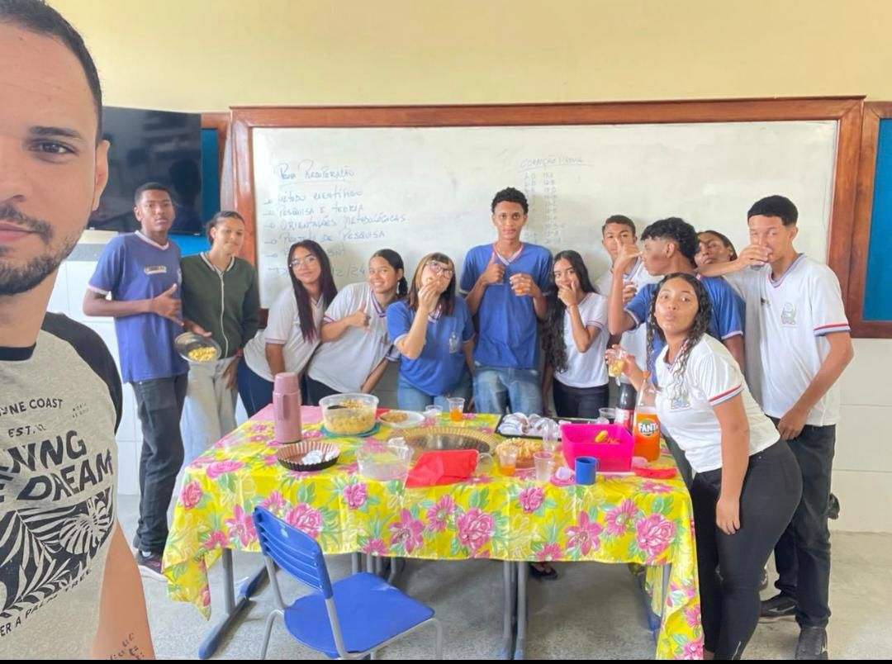

Inesquecíveis
Turma de Informática · 2024–2026
Uma história construída entre amizades, aprendizados e muitas conquistas.
Entre 2024 e 2026, construímos juntos uma trajetória marcada por amizade, aprendizado e muitas conquistas.
Este espaço reúne as memórias, os projetos e os momentos que tornaram nossa turma inesquecível.

Projeto desenvolvido pela turma durante o ano letivo.
Projeto criado pelos alunos para registrar as memórias da classe.
Desenvolvimento de projetos utilizando Arduino.
As pessoas que caminharam ao nosso lado ao longo desses três anos.


O professor Paulo Marques é um daqueles professores que acabam fazendo parte da nossa história, não apenas pelo que ensinam, mas também pelos momentos que vivemos juntos.
Paulo chegou ainda no final do primeiro ano, quando éramos duas turmas separadas. Pouco tempo depois, veio a junção das salas e tivemos que aprender a conviver com diferentes personalidades. Foi nessa época que Paulo também começou a conhecer melhor a nossa turma.
No segundo ano, enfrentamos um dos nossos maiores desafios: o banco de dados. Foram muitos códigos, erros, tentativas e momentos de desespero. Aos poucos, porém, fomos aprendendo e percebendo que éramos capazes de superar essas dificuldades.
Com seu jeito tranquilo, Paulo sempre nos mostrou que nem tudo precisava ser resolvido na pressa. Muitas vezes, era melhor parar, respirar, tomar um café e tentar novamente.
Também tivemos sua participação no Túnel da Computação, um projeto que marcou nossa caminhada. Em 2026, Paulo voltou como nosso professor de programação e também passou a acompanhar o projeto, continuando presente na nossa evolução.
Professor Paulo, obrigado pela paciência, pelos ensinamentos e por acreditar nas nossas ideias. O senhor fez parte de momentos importantes da nossa formação e sempre será lembrado com muito carinho.
Essa é a nossa história com Paulo Marques.


O professor Jonas chegou à nossa turma no segundo ano, quando ainda estávamos nos adaptando à junção das salas. Éramos uma turma cheia de personalidades, barulho e, muitas vezes, um verdadeiro caos.
No começo, não foi fácil. Tivemos broncas, desafios e até o famoso dia em que a turma foi zerada. Naquele momento, parecia o fim do mundo, mas depois entendemos a lição sobre respeito, responsabilidade e limites.
Com o tempo, a relação mudou. Vieram os projetos, as apresentações, as risadas e a confiança. Jonas passou a enxergar nosso potencial e nos incentivou a acreditar mais em nós mesmos.
Quando ele saiu, percebemos o quanto já fazia parte da nossa turma. E quando voltou em 2026, foi como recuperar uma parte importante da nossa caminhada.
Hoje, chamá-lo de Divo é uma forma de demonstrar todo o carinho que construímos ao longo desses anos.
Professor Jonas, obrigado por acreditar em nós, por nos desafiar e por fazer parte da nossa história. Uma parte do que somos também carrega um pouco de você.
Professor Álvaro — O início da nossa jornada.
Toda história tem um começo, e a nossa no curso de Informática começou com professores que acreditaram em nós. Um deles foi o professor Álvaro.
Foi com ele que tivemos nossos primeiros contatos com algoritmos, fluxogramas e lógica de programação. No começo, muitas coisas pareciam difíceis, mas aos poucos fomos aprendendo a pensar, errar, corrigir e tentar novamente.
Também ficaram marcadas as provas corrigidas ao vivo, os momentos de tensão, as risadas e até a famosa história de que ele tinha apenas 18 anos. Eram pequenas coisas que acabavam tornando as aulas especiais.
Mesmo tendo ficado conosco apenas no primeiro ano, Álvaro deixou uma marca importante na nossa turma. Sua saída foi sentida, mas seus ensinamentos continuaram fazendo parte da nossa caminhada.
Hoje, olhando para tudo o que construímos, percebemos que ele esteve presente em um momento muito importante: o nosso começo.
Professor Álvaro, obrigado por cada ensinamento, pelas brincadeiras e por fazer parte dos primeiros passos da nossa história. Você esteve apenas no primeiro ano, mas aquilo que nos ensinou continuou conosco nos anos seguintes. Obrigado por ter sido parte do nosso começo.

O professor Matheus foi um dos primeiros professores da nossa jornada no curso de Informática. Foi com ele que começamos a construir muitos dos conhecimentos que carregamos até hoje. Aprendemos os fundamentos de redes, demos os primeiros passos na programação e criamos nosso primeiro programa em Portugol, o inesquecível Olá, Mundo!.
Suas aulas sempre traziam algo diferente. Entre equipamentos, experiências e atividades práticas, fomos aprendendo não apenas a teoria, mas também a colocar o conhecimento em prática.
Como éramos a primeira turma, muitas vezes não tínhamos materiais suficientes. Por isso, fomos atrás de equipamentos em lojas e conseguimos doações de monitores, CPUs, teclados, mouses e memórias. Desmontar, montar, testar e tentar consertar fez parte da nossa formação.
No segundo ano, infelizmente, tivemos que nos despedir do senhor. Mas seus ensinamentos permaneceram conosco e continuam fazendo parte da nossa caminhada.
Professor Matheus, muito obrigado por tudo. O senhor foi uma das bases da nossa formação e sempre fará parte da nossa história.


Professora Nilmecy — A nossa madrinha, nossa inspiração.
O que dizer sobre uma professora que está conosco desde o começo?
A professora Nilmecy esteve presente desde os primeiros passos da nossa turma. Seus projetos nos deram oportunidades de mostrar quem somos, descobrir talentos e perceber que somos capazes de ir muito além da sala de aula.
Ela é uma professora de História que ensina muito mais do que História. Ensina responsabilidade, respeito, caráter e a importância de buscar sempre algo a mais. E, claro, também não faltaram os famosos puxões de orelha que fizeram parte da nossa caminhada.
Entre projetos, brincadeiras e muitos momentos especiais, construímos uma relação de carinho e admiração.
Hoje temos a honra de chamá-la de nossa madrinha. Obrigado, professora Nil, por cada oportunidade, cada conselho e por sempre acreditar em nós.
A senhora faz parte da nossa história, da nossa formação e do nosso coração.
Com carinho, 3º Ano de Informática.


A professora Thaise chegou à nossa turma este ano trazendo muito mais do que fórmulas e cálculos. Trouxe paciência, dedicação e, principalmente, carinho pelo que faz.
Nossa turma sempre teve suas dificuldades com Matemática, mas, com a senhora, começamos a enxergar a matéria de uma maneira diferente. Aprendemos que errar faz parte e que, com esforço e persistência, somos capazes de aprender.
Foi por isso que escolhemos a senhora para ser nossa madrinha. Porque, além de ensinar Matemática, a senhora acredita em nós e nos incentiva a continuar.
Obrigado por cada explicação, cada conselho e por não desistir de nós. É uma honra ter a senhora ao nosso lado nessa reta final.
Professora Thaise, nossa madrinha, obrigado por fazer parte da nossa história.
Alguns dos instantes que mais marcaram a turma ao longo desses três anos.


O vídeo especial da nossa turma.


Os principais capítulos da nossa caminhada, contados pelas histórias que já fazem parte da turma.
Com o professor Matheus, demos os primeiros passos: fundamentos de redes, os primeiros programas em Portugol e o inesquecível "Olá, Mundo!". Com o professor Álvaro, veio o primeiro contato com algoritmos, fluxogramas e lógica de programação — e as provas corrigidas ao vivo.
Duas turmas separadas se tornaram uma só. Foi também nessa época que o professor Paulo chegou e começou a conhecer melhor a nossa turma — e que nos despedimos do professor Álvaro e do professor Matheus.
Enfrentamos o banco de dados ao lado do professor Paulo — muitos códigos, erros e tentativas até aprendermos a superar as dificuldades. Foi também o ano em que o professor Jonas chegou, trazendo desafios, limites e, com o tempo, muita confiança.
Paulo voltou como professor de programação, agora também acompanhando o projeto Túnel da Computação. Jonas — carinhosamente apelidado de "Divo" — também retornou. A professora Nilmecy, presente desde o início, seguiu como nossa madrinha, e a professora Thaise chegou trazendo paciência e confiança para a reta final.
Feira de Ciências, Robótica com Arduino e o próprio site da turma — cada projeto reunindo tudo o que aprendemos e construímos juntos ao longo desses três anos.
A cada professor, a cada projeto e a cada momento registrado aqui, uma parte da nossa história.
Obrigado por terem feito parte dela.